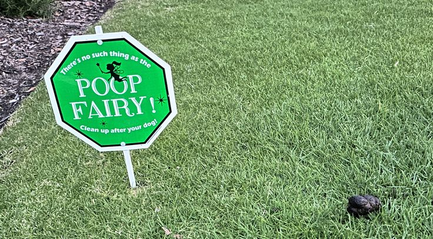
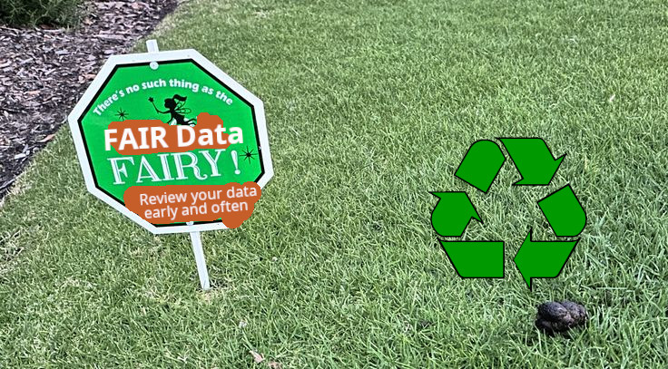

2025-11-19
Presented at the 17-19 Nov 2025 kick-off meeting in Freising, Germany of the EU Horizon’s ProPollSoil project “Understanding and managing soil health impacts to protect soil-dependent pollinators” https://doi.org/10.3030/101219108.
Adapted from:
Poelen, J.H. (2025) Fairy Tales and Digital Research Data. hash://md5/74cabb19c6dcf3e2eea27a38acf4fb76 Zenodo. https://doi.org/10.5281/zenodo.17625448
Poelen, J.H. (2025) Fairy Tales and Data Reuse. Zenodo. https://doi.org/10.5281/zenodo.
CC BY 4.0. For license text, see https://creativecommons.org/licenses/by/4.0/.

[…] In 2016, the ‘FAIR Guiding Principles for scientific data management and stewardship’1 were published in Scientific Data. The authors intended to provide guidelines to improve the Findability, Accessibility, Interoperability, and Reuse of digital assets. The principles emphasise machine-actionability (i.e., the capacity of computational systems to find, access, interoperate, and reuse data with none or minimal human intervention) because humans increasingly rely on computational support to deal with data as a result of the increase in volume, complexity, and creation speed of data. […] 2
[…] “The various books and journals of ornithology and entomology are like a row of beehives containing an immense amount of valuable honey, which has been stored up in separate cells by the bees that made it. The advantage, and at the same time the difficulty, of ecological work is that it attempts to provide conceptions which can link up into some complete scheme the colossal store of facts about natural history which has accumulated up to date in this rather haphazard manner. […] Until more organised information about the subject is available, it is only possible to give a few instances of some of the more clearcut niches which happen to have been worked out. […]” 3
[…] “The various books and journals of ornithology and entomology are like a row of beehives containing an immense amount of valuable honey, which has been stored up in separate cells by the bees that made it. The advantage, and at the same time the difficulty, of ecological work is that it attempts to provide conceptions which can link up into some complete scheme the colossal store of facts about natural history which has accumulated up to date in this rather haphazard manner. […] Until more organised information about the subject is available, it is only possible to give a few instances of some of the more clearcut niches which happen to have been worked out. […]” 4
[…] “The various books and journals of ornithology and entomology are like a row of beehives containing an immense amount of valuable honey, which has been stored up in separate cells by the bees that made it. The advantage, and at the same time the difficulty, of ecological work is that it attempts to provide conceptions which can link up into some complete scheme the colossal store of facts about natural history which has accumulated up to date in this rather haphazard manner. […] Until more organised information about the subject is available, it is only possible to give a few instances of some of the more clearcut niches which happen to have been worked out. […]” 5
the FAIR Data Fairy.
Awareness of the complexity of reusing digital data.
Common sense data reuse and review practices.
Who is this FAIR Data Fairy?
Awareness of the complexity of reusing digital data.
Common sense data reuse and review practices.
GBIF Secretariat provides a publication framework for biodiversity data, but is neither the owner nor custodian of such data, and therefore is not responsible for the actual content served by Data Publishers.
GBIF Secretariat cannot guarantee the quality or completeness of data, nor does it guarantee uninterrupted data access services. Users employ these data and services at their own risk. 6.
GBIF Secretariat provides a publication framework for biodiversity data, but is neither the owner nor custodian of such data, and therefore is not responsible for the actual content served by Data Publishers.
GBIF Secretariat cannot guarantee the quality or completeness of data, nor does it guarantee uninterrupted data access services. Users employ these data and services at their own risk. 7.
[…] Data files are versioned. Records are not versioned. […] Records can be retracted from public view; however, the data files and record are preserved. […] Items will be retained for the lifetime of the repository. This is currently the lifetime of the host laboratory CERN, which currently has an experimental programme defined for the next 20 years at least. […] All data files are stored in CERN Data Centres, primarily Geneva, with replicas in Budapest. […] In case of closure of the repository, best efforts will be made to integrate all content into suitable alternative institutional and/or subject based repositories. […] 8.
[…] Data files are versioned. Records are not versioned. […] Records can be retracted from public view; however, the data files and record are preserved. […] Items will be retained for the lifetime of the repository. This is currently the lifetime of the host laboratory CERN, which currently has an experimental programme defined for the next 20 years at least. […] All data files are stored in CERN Data Centres, primarily Geneva, with replicas in Budapest. […] In case of closure of the repository, best efforts will be made to integrate all content into suitable alternative institutional and/or subject based repositories. […] 9.


the FAIR Data Fairy
Awareness of the complexity of reusing digital data.
Common sense data reuse and review practices.
the FAIR Data Fairy
Awareness of the complexity of reusing digital data.
Common sense data reuse and review practices.
What is so neat about peer review?
How to review digital data?
Even before Mainly after the invention of the book press,
books and scrolls scholarly journals and academic
societies10 have been pretty successful in
transferring scientific knowledge across generations
and around the world.
Books Scholarly journals are kept around
the world in (little) public libraries, academic institutions, private
collections and national archives.
Books Printed scholarly journals are
wireless, their content cannot be easily altered remotely, changes can
be detected (ripped out pages), and they need no power to operate. (note
to self: archive digital only journals)
Typically, scholarly journals employ a peer review process to select scholarly works of interest and increase their quality through review cycles and discourse.
Even before Mainly after the invention of the book press,
books and scrolls scholarly journals and academic
societies11 have been pretty successful in
transferring scientific knowledge across generations
and around the world.
Books Scholarly journals are kept around
the world in (little) public libraries, academic institutions, private
collections and national archives.
Books Printed scholarly journals are
wireless, their content cannot be easily altered remotely, changes can
be detected (ripped out pages), and they need no power to operate. (note
to self: archive digital only journals)
Typically, scholarly journals employ a peer review process to select scholarly works of interest and increase their quality through review cycles and discourse.
Step 1. Update and share your data early and often, ideally using versioned copies of digital data referenced by signed citations 12.
Step 2. Ask friends and family (e.g., close collaborators) to review/reuse a specific version of your data. Repeat step 1.
Step 3. Ask consortium members to review/reuse a specific version of your data. Repeat steps 1-2.
Step 4. Ask external members to review and reuse early versions of your data. Repeat steps 1-3.
Step 5. Register your data with data registries/journals, track reuse and gather (automated?) feedback. Repeat steps 1-5.
Step 6. Register your data with data journals and gather to review and reuse early versions of your data. Repeat steps 1-3.
Step 7. Repeat steps 1-6 until you retire your data.
the FAIR Data Fairy
Awareness of the complexity of reusing digital data.
Common sense data reuse and review practices.
Made possible (in part) by Horizon Europe’s 101219108
For questions/comments/ideas, please do reach out to:
Jorrit H. Poelen
https://orcid.org/0000-0003-3138-4118
Wilkinson, et al. 2016, Sci Data doi:10.1038/sdata.2016.18↩︎
Accessed on 2025-11-19 at https://www.go-fair.org/fair-principles/.↩︎
Charles Elton, 1927. Animal Ecology. pp 65-66. doi:10.5962/bhl.title.7435↩︎
Charles Elton, 1927. Animal Ecology. pp 65-66. doi:10.5962/bhl.title.7435↩︎
Charles Elton, 1927. Animal Ecology. pp 65-66. doi:10.5962/bhl.title.7435↩︎
https://www.gbif.org/terms/data-user as accessed on 2025-10-13↩︎
https://www.gbif.org/terms/data-user as accessed on 2025-10-13↩︎
https://about.zenodo.org/policies/ as accessed on 2025-11-05↩︎
https://about.zenodo.org/policies/ as accessed on 2025-11-05↩︎
First journal “Philosophical Transactions” was launched in 1665 according to https://royalsocietypublishing.org/journal/rstl accessed on 2025-11-19.↩︎
First journal “Philosophical Transactions” was launched in 1665 according to https://royalsocietypublishing.org/journal/rstl accessed on 2025-11-19.↩︎
Elliott et al. 2023. Sci Data. doi:10.1038/s41597-023-02230-y↩︎